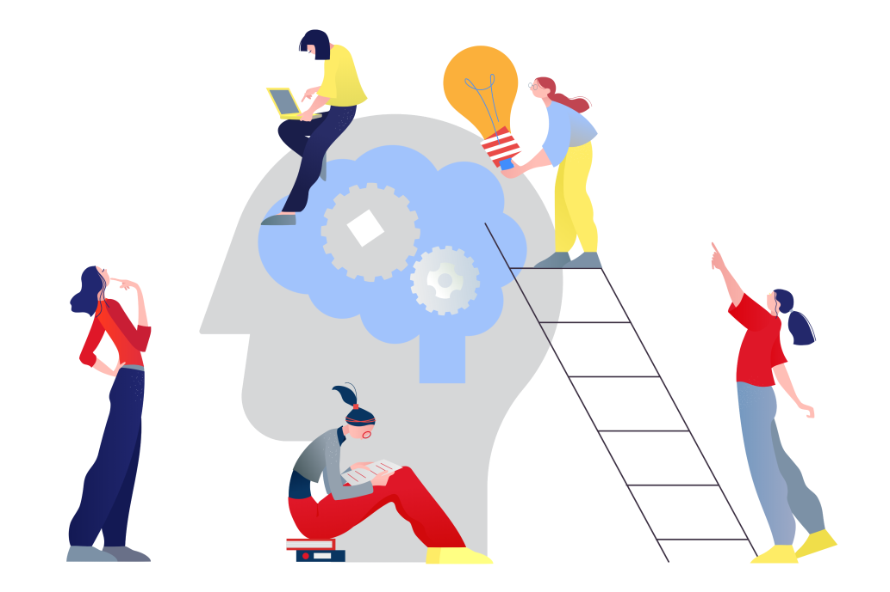
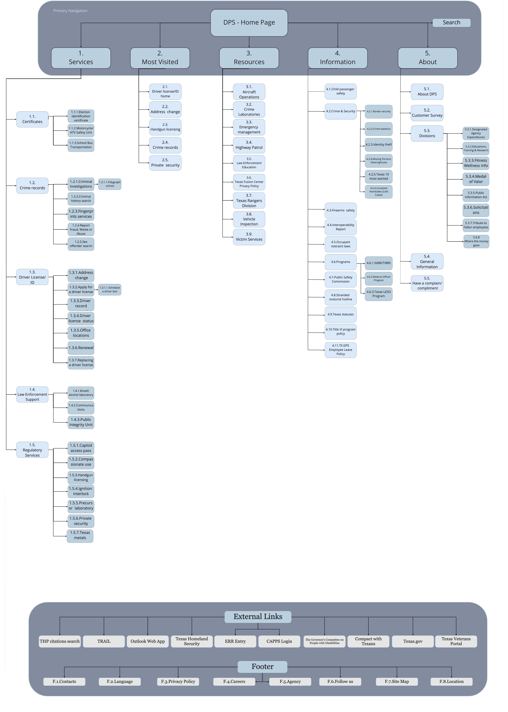
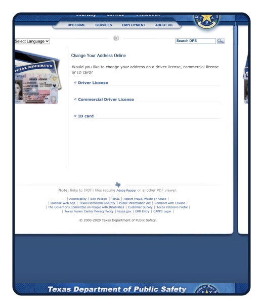
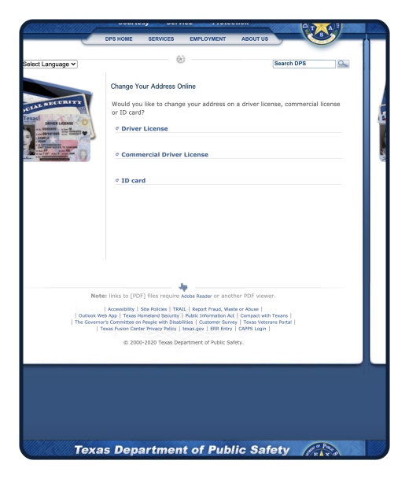

Main Goals
After properly understanding the problem statements, the main goals of the website redesign were established.
Declutter the
landing page
Improve the
site's navigation
Make minimal and
modern design
Improve the
site analytics
Texas DPS
Website Redesign
ChefMeet is a healthy food delivery service that offers nutritionally balanced and freshly prepared food. They target young working professionals and busy individuals who can trust ChefMeet to achieve a healthier lifestyle. Chefmeet is connecting hungry business professionals to everyday chefs in your own neighborhood.
Problem
Statement
Research
Wireframes
Visual Design
According to the active users of the website, the current design does not provide the best user experience and visual aesthetics. The lack of clear hierarchy in the flow means there are some that are unwanted by the users or unclear to them. it takes too long for them to get the task done..
Too cluttered
No clear navigation
Lack of consistency
Outdated design

Declutter the
landing page
Improve the
site's navigation
Make minimal and
modern design
Improve the
site analytics
Research
Define
Develop
Launch
We have conduct Guerilla Test Interviews in order to
collect data that can help us identify
the
main problem
areas in the website, how we could fix them, as
well as what our users are
looking
for.
We started to brainstorm on the user flow and the site map to narrow our scope and determine which features would best improve our users' experience.
Once we decided on the features for the app and had a general idea for the app, I created our site map. I used this to help get a clear picture of our information architecture and what pages needed to create.



 
